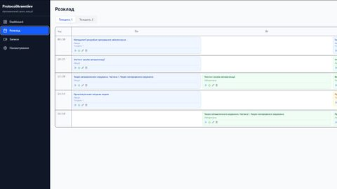
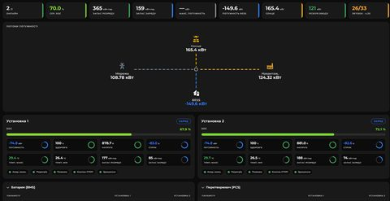
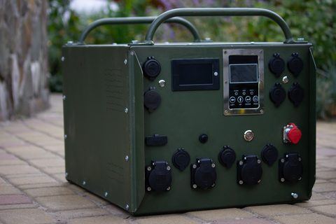

ProtocolArsentiev: бот, який конспектує пари
Що вміє бот-помічник: записує заняття, робить транскрипції й підсумки, надсилає розклад у чат групи.
Нотатки про розробку, дизайн і фотографію.

Сторінка має однаково добре працювати на екранах від 320 до 2560 пікселів. Нижче — три прийоми, на яких тримається верстка цього сайту.
Базові стилі пишуться для найвужчого екрана: одна колонка, нічого зайвого.
Ширші макети додаються медіазапитами з min-width. Телефон отримує
найпростіші правила, а складні вмикаються лише там, де для них є місце.
Сітку зручно описувати іменованими областями. Щоб перебудувати макет на ширшому
екрані, достатньо перевизначити grid-template-areas — розмітка
лишається незмінною.
.home-grid {
display: grid;
grid-template-columns: minmax(0, 1fr);
grid-template-areas: "about" "profile" "projects";
}
Коли медіазапит зайвий, допомагає Flexbox: кожна колонка отримує
flex-basis: calc((60rem - 100%) * 999). Якщо контейнер ширший
за 60rem, значення від'ємне, і браузер бере нуль — колонки стають у рядок.
Якщо вужчий — значення величезне, і кожна колонка переходить на новий рядок.
Проміжного стану немає.
Ламайте там, де ламається вміст, а не пристрій.
Медіазапити лишаються для великих перебудов макета. Решта — сітки карток,
розміри шрифтів, окремі компоненти — підлаштовується сама через
auto-fit, clamp() і container queries.

= 62rem) 12rem, 100vw" width="480" height="270" loading="lazy" alt="Розклад пар у ProtocolArsentiev на тиждень">Що вміє бот-помічник: записує заняття, робить транскрипції й підсумки, надсилає розклад у чат групи.

= 62rem) 12rem, 100vw" width="480" height="247" loading="lazy" alt="Інтерфейс EMS: потоки потужності між мережею, сонцем, накопичувачем і навантаженням">Моніторинг, енергоарбітраж, острівний режим і керування парком об'єктів з одного інтерфейсу.

= 62rem) 12rem, 100vw" width="480" height="320" loading="lazy" alt="Саморобна зарядна станція в зеленому металевому корпусі">Нотатки про ремонт станцій EcoFlow і Jackery.